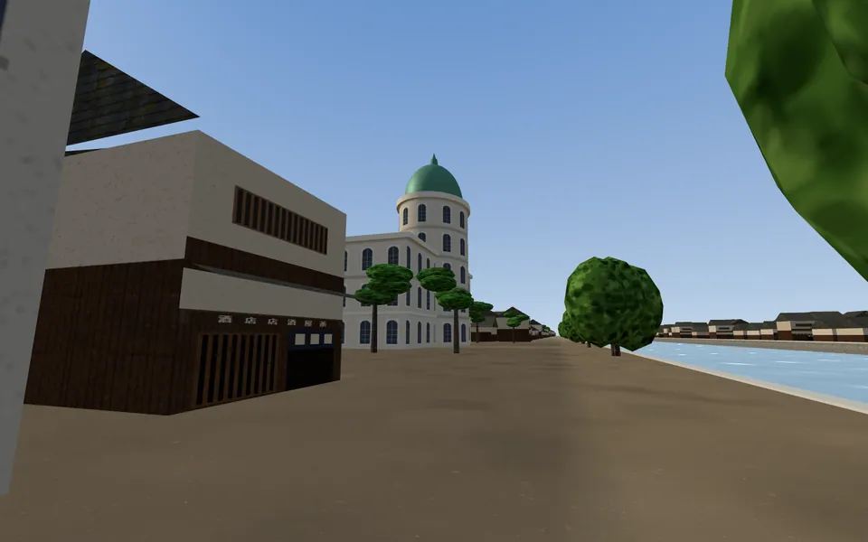

Walk the same streets in five moments: the morning of 6 August 1945, 8:15, that afternoon, the rebuilt city of 1958 and today. Made for reading The Flowers of Hiroshima, in English and Greek.
Χιροσίμα, 6 Αυγούστου 1945: μια επίσκεψη σε εικονική πραγματικότητα, στα αγγλικά και στα ελληνικά.
8:15 shows the explosion with a bright flash and loud sounds; ⚙ › Moving › Bright flash makes it gentler. No people are shown.